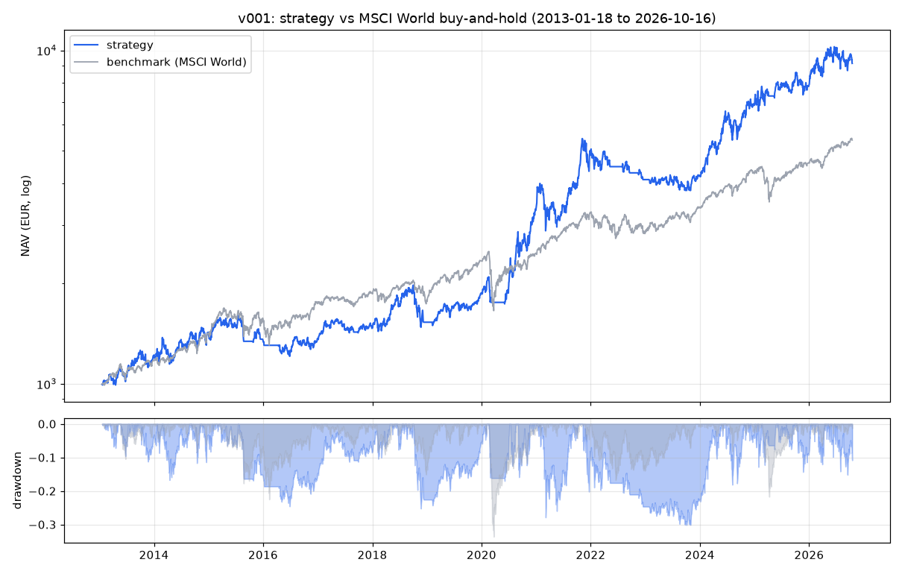

Strategy
Current version: v001 (2026-10-18). Live algorithm: strategy/current.py, parameters:
strategy/params.toml, universe: strategy/universe.csv. Frozen copy:
strategy/versions/v001_2026-10-18.py / .toml. Backtest: research/backtests/v001.json.
v001 in plain language
A slow, trend-filtered momentum rotation over a fixed list of 44 liquid instruments (24 ETFs, 2 gold ETCs, 1 bitcoin ETP, 15 large-cap stocks, 2 cash-like ETFs that are never bought). Everything is priced in EUR on Xetra/gettex listings.
- Trend filter with a band. New positions are only opened while the MSCI World
ETF (
IE00B4L5Y983) closes above its 200-day simple moving average. Everything is sold once it closes more than 3% below that average. In between, nothing changes. The band exists because the index crosses its average many times a year; without it the strategy sold and re-bought the whole book on every wobble. - Ranking. 12-1 month momentum:
close[t-21] / close[t-252] - 1, computed after each close on the risk sleeve (everything except the two cash ETFs). Instruments with fewer than 260 days of history are not ranked. - Holding rule. Hold up to 4 positions, equal target weight 25% of NAV each. Free slots are filled, any day, with the best-ranked instruments not already held, provided their momentum is positive.
- Exits. Only in the first 3 trading days of each month: a held instrument is sold if its momentum is negative or its rank is worse than 7. Outside that window, only the trend filter can sell. This hysteresis (enter at rank 4 or better, leave at rank 8 or worse) is what keeps turnover down.
- Sizing. Each buy is
min(target - current, 24% of NAV, spendable cash), rounded down to cents; buys under EUR 100 are skipped (the mandate allows EUR 25, but at EUR 0.99 per order that is a 4% fee). Sells are whole positions. There are no top-ups. - Two orders a day, sells first. A full rotation takes a few days by design.
What it is not: it does not use volatility targeting (pointless on four positions and EUR 1,000), it does not short, it does not use limit orders (the CLI cannot list open orders), and it does not look at news. The daily session reads news and may refuse to trade, but may not change the orders.
Costs assumed
Scalable FREE plan on EIX: EUR 0.99 per order. Spread model: 0.25% for ETFs/ETCs, 0.50% for single stocks, plus 0.99% on the bitcoin ETP. Execution at the same day's close plus half the spread, which is closer to an 18:15 fill on EIX than the usual "next open" assumption.
Backtest, 2013-01-18 to 2026-10-16 (EUR 1,000 start)
| v001 | MSCI World buy-and-hold | |
|---|---|---|
| CAGR | 17.5% | 13.1% |
| Max drawdown | -30.1% | -33.6% |
| Sharpe (daily, rf 0) | 0.82 | 0.87 |
| Volatility | 21% | 15% |
| Trades | 262 | 1 |
| Fees paid | EUR 259 | EUR 1 |
| Turnover per year | 3.7x NAV | 0 |
| In-sample CAGR (first 70%) | 16.9% | 12.2% |
| Out-of-sample CAGR (last 30%) | 19.5% | 15.2% |
Chart: research/backtests/v001.png.
Why these numbers should not be trusted much
- Survivorship bias, the big one. The universe is a list written in October 2026. It contains NVIDIA, Tesla, Rheinmetall, ASML and a semiconductor ETF because they are large today. A momentum rule run over the last decade on that list will "discover" them. The honest expectation for live performance is far below 17.5%. The ETF-only part of the universe is less affected; a research session should measure the strategy on ETFs only.
- One regime. 2013 to 2026 was mostly a long equity bull market with two sharp crashes (2020, 2022). Trend following looks good in exactly that. It bleeds in sideways, choppy markets (2015 to 2016 in this very backtest, in-sample CAGR 7% in the first variants).
- Costs are modelled, not measured. Spreads at 18:15 on EIX for single stocks may be wider than 0.5%. The first weeks of live fills will tell.
- Variants were looked at. Before fixing v001 I ran five structural variants on the same data (see changelog). v001 is the one with the two mechanism-justified fixes, not the one with the best number.
What the daily session should watch
- Trend filter state and distance from the SMA. A close within 1% of the exit level means the whole book may be sold tomorrow.
- Fills versus preview: slippage above 0.5% on an ETF is a data point for the inbox.
- Rejections by the guardrails (
trades/*.jsonwith statusrejected): they mean the algorithm and the account disagree about something.
Changelog
v001 (2026-10-18) initial version
Written by the build session. Design history, in order, all on the same data and frictions (CAGR / max drawdown / trades / out-of-sample CAGR):
| Variant | Change | CAGR | MaxDD | Trades | OOS CAGR |
|---|---|---|---|---|---|
| A | exits checked daily, trend filter without band | 8.8% | -40% | 582 | 20.0% |
| B | exits only in the monthly window | 10.6% | -35% | 506 | 18.9% |
| C = v001 | B plus 3% trend exit band | 17.5% | -30% | 262 | 19.5% |
| D | C with 3 positions, hold rank 6 | 13.9% | -29% | 201 | 20.3% |
| E | C with hold rank 10 | 23.0% | -28% | 196 | 22.6% |
A and B showed that the trend filter, not the ranking, caused most of the churn: the index crossed its 200-day average dozens of times and each cross sold and re-bought four positions. The band (C) halved the number of trades. D and E are parameter choices made after seeing results, so they are not adopted; E is the first candidate for the research loop, with the explicit warning that a wider hold band mostly means "hold the winners longer", which on a survivor universe is exactly where look-ahead hides. Benchmark over the same period: 13.1% CAGR, -33.6% max drawdown.
Backtests
v001 2013-01-18 → 2026-10-16
| Strategy | Benchmark | Strategy OOS | Benchmark OOS | |
|---|---|---|---|---|
| CAGR | 17.5% | 13.1% | 19.5% | 15.2% |
| Max drawdown | -30.1% | -33.6% | -18.1% | -21.7% |
| Sharpe | 0.82 | 0.87 | 0.85 | 1.14 |
| Volatility | 22.7% | 15.3% | 24.2% | 13.1% |
| Trades | 262 | 1 | 0 | 0 |
| Fees (EUR) | 259.38 | 0.99 | 0.00 | 0.00 |
| Turnover / year | 3.73 | 0.0 | 0.0 | 0.0 |
| End NAV (EUR) | 9,144.82 | 5,382.15 | 9,144.82 | 5,382.15 |

Frictions: EUR 0.99 per order, spreads 0.25% ETF / 0.5% stock, crypto surcharge 0.99%, same-day close +/- half spread. Out-of-sample = last 30% of the period; parameters were not fitted. Data: yfinance daily closes (EUR listings), 44 instruments.